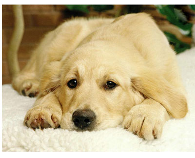
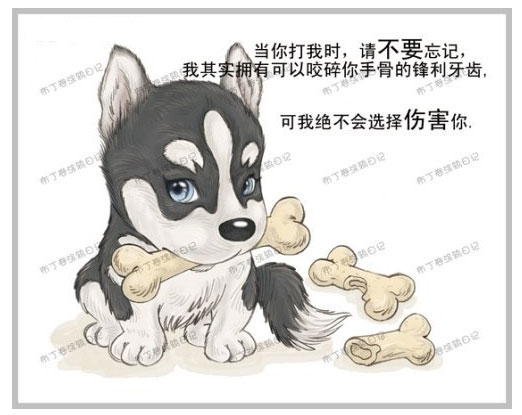
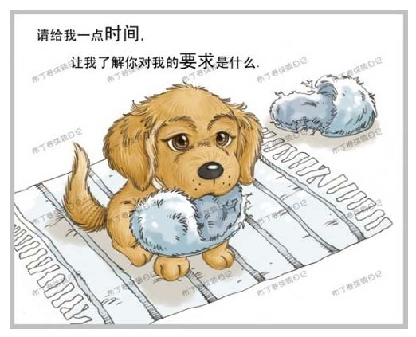
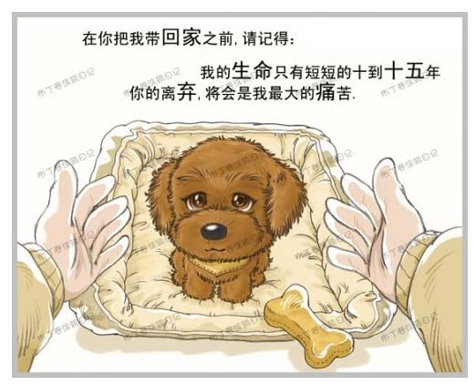
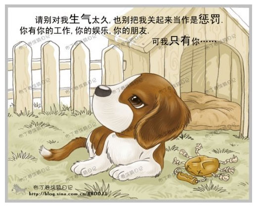
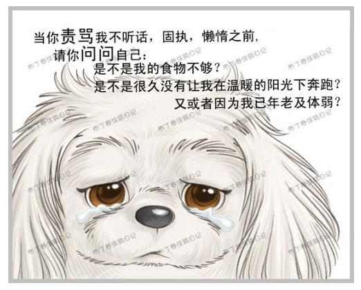
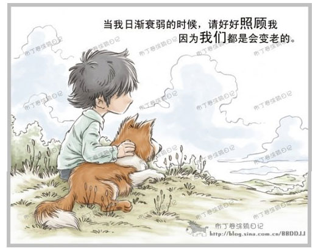
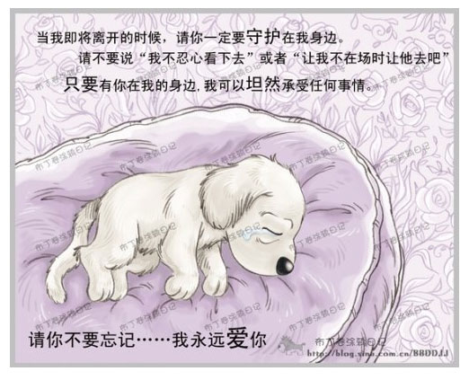

美国狗证上的7句话（看到最后，泪流满面）
狗狗，人类的最忠实的好朋友
亲，您看过美国狗证上的7句话吗？无论如何，请好好珍爱你的狗狗。平时多用一点时间来陪伴它，少些对它发脾气；因为无论你是否愿意，狗狗最多只能陪伴你十余年。不要离开后，才想起要好好对它好。
1）请别打我，记住，我有反抗的牙齿，但我不会咬你。
My life likely to last ten to fifteen years. Any separation from you will be painful for me. Remember that before you buy me.
2）在给我命令时请给我理解的时间，别对我发脾气，虽然我一定会原谅你的，你的耐心和理解能让我学得更快。
Give me time to understand what you want of me.
3）我这一生大概能活10到15年，和你分别是件无比痛苦的事。
My life likely to last ten to fifteen years. Any separation from you will be painful for me. Remember that before you buy me.
4）请好好对我，因为世界上最珍惜最需要你的爱心的是我，别生气太久，也别把我关起来，因为，你有你的生活，你的朋友，你的工作和娱乐，而我，只有你。
Don't be angry for me for long and don't lock me up as punishment. You have your work，your entertainment and your firends. I have only you.
5）请注意你对待我的好，我永远不会忘记它，如果它是残酷的，可能会影响我永远。
Be aware that however you treat me, I'll never forget it and if it's cruel it may affect me forever.
6）当我老了，不再像小宝贝时那么可爱时，请你仍然对我好，仍然照顾我，带我看病，因为我们都会有老的一天。
Take care of me when I get old. You too，will grow old.
7）当我已经很老的时候，当我的健康已经逝去，已无法正常的生活。我知道你也不想我离开，但请接受这个事实，并在最后的时刻与我在一起，求求你一定不要说"我不忍心看它死去"而走开，因为在我生命的最后一刻，如果能在你怀中离开这个世界，听着你的声音，我就什么都不怕。记住....我永远爱你!
Go with me on difficult journeys. Never say I can't bear to watch it or let it happen in my absent. Everything is easily for me if you are there. Remember，I love you.
